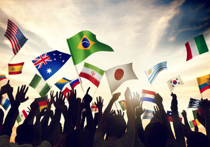

The Origins of the FIFA World Cup
The FIFA World Cup was first held in 1930 in Uruguay, with 13 teams participating. The tournament was the brainchild of FIFA president Jules Rimet, who wanted to create a global football competition to promote the sport worldwide.
The inaugural World Cup was won by the host nation, Uruguay, who defeated Argentina 4-2 in the final. This set the stage for the World Cup to become the most prestigious and widely-followed football tournament in the world.
Iconic Moments and Legendary Players
Over the decades, the FIFA World Cup has produced countless iconic moments and legendary players. From Pele's stunning performances in the 1950s and 1960s to Diego Maradona's "Hand of God" goal in 1986, the tournament has been a stage for the greatest players to showcase their skills.
Other legendary figures include:
- Franz Beckenbauer: Captained West Germany to victory in the 1974 World Cup and later managed the team to the 1990 title.
- Johan Cruyff: Pioneered the revolutionary "Total Football" philosophy and led the Netherlands to the 1974 World Cup final.
- Zinedine Zidane: Scored two goals in the 1998 World Cup final to help France win the tournament, and later managed the national team to victory in the 2018 World Cup.
- Lionel Messi: Considered one of the greatest players of all time, Messi finally won the World Cup with Argentina in 2022 after several heartbreaks.
The Evolution of the World Cup
Despite the changes the FIFA World Cup has undergone, the tournament's core values of sportsmanship, unity, and the pursuit of excellence have remained constant, making it one of the most beloved and anticipated sporting events in the world.
1950
The World Cup returned after a 12-year hiatus due to World War II.
1966
The first World Cup to use a group stage format and a third-place match.
1970
The first World Cup to be broadcast in color, reaching a wider global audience.
1986
The first World Cup to feature 24 teams, expanded from the previous 16-team format.
1998
The first World Cup to feature 32 teams, the current format.
2006
The first World Cup to use goal-line technology to assist referees.
2014
The first World Cup to use the video assistant referee (VAR) system.
2018
It was the eleventh time the championships had been held in Europe
2022
It was the First World Cup which Had Air Conditionered Stadiums